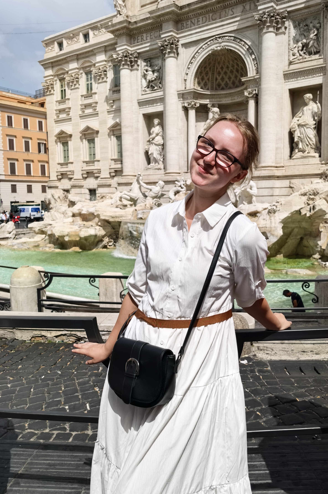

Достижения
Первые шаги в вебе, моменты Италии и поиск баланса.
СмотретьВеб-разработчик в процессе · Фотограф
По соционике я — Дюма: ценю уют, гармонию и людей вокруг. Пишу код на HTML, CSS, JS и ловлю моменты в объектив. Веб-разработка и фотография — два способа показать миру свою эстетику.

Открыта к интересным проектам, стажировкам и просто теплому общению.
Telegram: @KKaterinnka GitHub